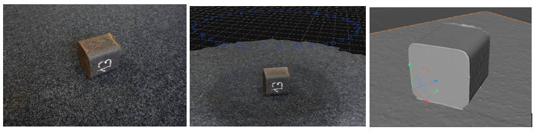

Photogrammetry is a technique for the capturing of three-dimensional (3D) models from real world environments. The technique works by taking images from manually selected positions and reconstructing a 3D model from the images. As the camera parameters (position and orientation) are unknown, the most important step is to computationally determine position and orientation of each image.
Photogrammetry has a reduced surface precision compared to laser-based surface scanners, but has the immense advantage that it generates textured models in a single step, i.e. the generated models can immediate be used for photorealistic rendering. Another advantage is that photogrammetry is applicable to a wide range of length scales. If combined with macro photography, photogrammetry can capture details on the micrometer scale, if combined with handheld cameras it can produce centimeter scale objects, and combined with drones (aerial photogrammetry), the capture area can extend over several square kilometers.
In the course of this project, we will provide a process for aerial photogrammetry which allows the capturing of entire sections of a production plants, such as the Saarstahl milling plant. This workflow will be assembled from commercially available components but adapted to the specific needs if being used in a large indoor-environment with harsh production conditions. The purpose of the captured 3D models is the generation of training data for machine learning applications.
The first example depicts a photogrammetric model reconstruction of Saarstahl’s steel billet chunk with dimensions 10x10x10 cm. The chunk was shot at different viewpoints by a handheld camera. 44 unpreprocessed photographs were used as an input for Agisoft Metashape software.
Figure: Photogrammetric reconstruction of Saarstahl’s billet chunk. Left: one of 44 original photographs of the billet chunk. Middle: a viewport of Agisoft Metashape with indicated camera positions. Right: a reconstructed untextured 3D model.
The second example is a usage of photogrammetry for synthesizing training data for deep learning applications. In particular, in the course of the project we explore the ability of using synthetically generated images for training billet tracking models. To begin the simulation process, a large number of high-resolution overlapping photos was taken over the area of Saarstahl’s blooming train. Here, we conducted image capturing by a drone as well as by a tripod-mounted camera. Using Agisoft Metashape software we reconstructed the 3D shape of the scenery, which replicates the real environment in correct dimension proportions (Figure top). Next, the 3D model of the blooming train was repaired and cleaned up. After 3D parametric models of billets were inserted into the scene, the wide-angle lens distortion was applied (Figure, bottom left). To simulate changes in scenery and lightning conditions, the 3D setting was composed with original footages captured by surveillance cameras (Figure, bottom middle). Finally, we rendered images paired with billet segmentation masks (Figure, bottom right) which are used as a training data for billet detection and tracking models.

Figure: Process of synthesizing training data. Top: a textured 3D model of Saarstahl’s blooming train. Bottom left: a 3D setting of billet rolling process. Bottom middle: a generated image. Bottom right: a generated instance segmentation mask.
Recommended configurations for Agisoft Metashape: